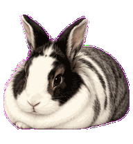
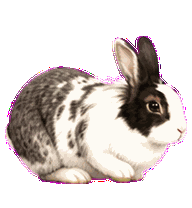
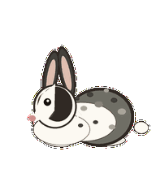
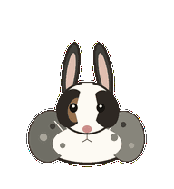
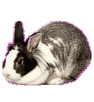
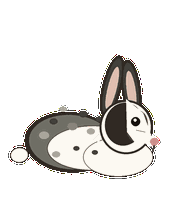
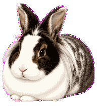
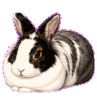
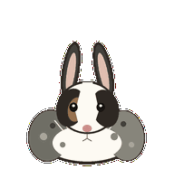
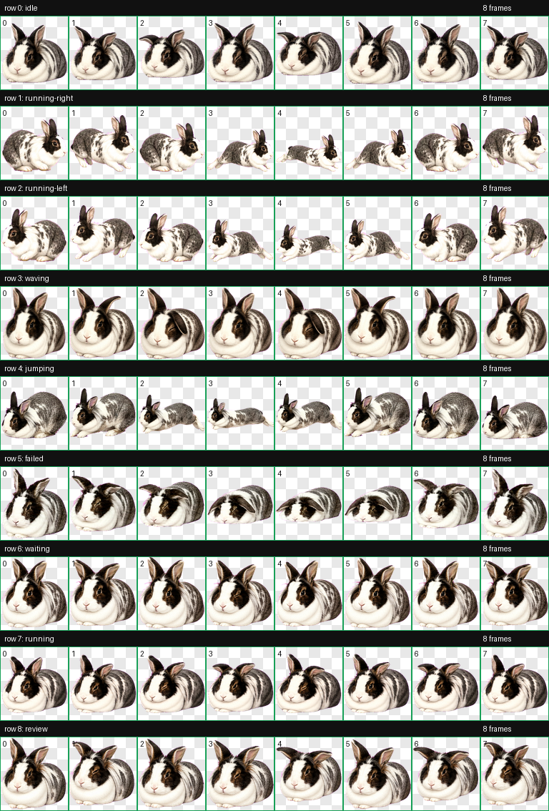

Custom Codex Pet
Luna
A public showcase for a full nine-state Codex pet built from a real rabbit, with low loaf anatomy, lionhead ruff, mottled coat detail, rabbit-specific hind-foot motion, and enriched eight-frame state loops.
{kind=link}
idle
Compact tucked loaf with breathing, nose twitch, asymmetric blink, and ear flick.
Built For Codex
Complete Atlas
All nine Codex pet states in a validated 1536 x 1872 WebP atlas, now with every row filled to eight frames.
Rabbit Gait
Directional motion uses forefoot reach, hindquarter load, long hind-foot toe-off, flight, and recovery.
Luna Identity
Low dewlap-cushioned head, steep tucked haunch, white blaze, dark mask, quirky eye, and ruff.
Public Safe
The repo includes generated pet assets and distilled notes only. Source reference photos are not published.
State Previews









Contact Sheet

Install
Drop the manifest and atlas into your Codex pets directory.
mkdir -p ~/.codex/pets/luna cp pet.json ~/.codex/pets/luna/pet.json cp assets/spritesheet.webp ~/.codex/pets/luna/spritesheet.webp